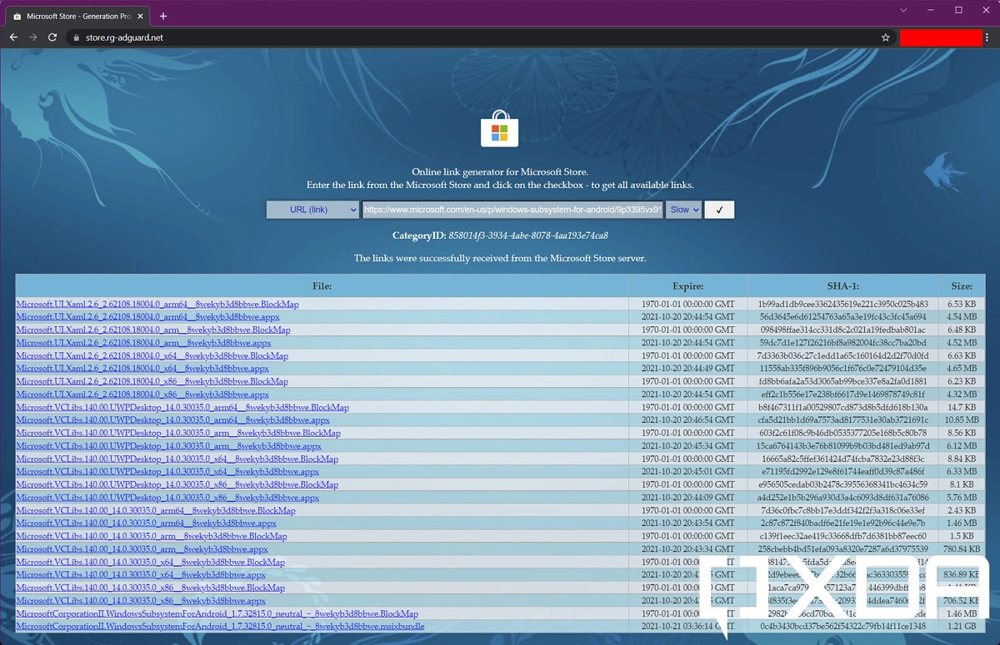

مایکروسافت با اعلام این خبر که اپلیکیشن های اندروید در ویندوز 11 قابل اجرا هستند، جانی تازه به ویندوز داد.
اگر در دسته علاقهمندان به فناوری باشید، حتمامی دانید که ویندوز 11 به عنوان بزرگترین بهروزرسانی تاریخ مایکروسافت شناخته میشود. اجرای این نسخه از ویندوز به سختافزار سنگین و پیشرفتهای احتیاج دارد.
با همه این تفاسیر، اپلیکیشن های اندروید روی Windows 11 نصب میشود. اما چطور؟ در این مطلب به دو روش نصب و اجرای اپلیکیشن اندروید بر روی ویندوز 11 را توضیح میدهیم اولی از طریق ورود به پروگرم Insider و تغییر ریجن و دومی بدون نیاز به تغییر ریجن و ورود به اینسایدر.
توجه
پیش از اینکه به مراحل نصب دستی Windows Subsystem for Android بپردازیم، به خاطر داشته باشید که نسخه فعلی فرسنگ ها با نسخه پایدار (Stable) فاصله دارد. مایکروسافت محدودیت ها را با در نظر گرفتن پارامترهای عملکرد در نظر گرفته است، به همین دلیل ممکن است گاهی اوقات با گلیچ (یا حتی کرش) در پلتفرم های پشتیبانی نشده روبرو شوید. همیشه بهتر است قبل از ایجاد تغییرات در سیستم بک آپ تهیه کنید.
مراحل فعال سازی قابلیت اجرای اندروید در ویندوز 11 (روش اول)
تنظیم ریجن (Region) یا منطقه
تنظیم ریجن ویندوز
با مراجعه به تنظیمات ویندوز و سپس بخش زمان و زبان (Time & Language) و در نهایت بخش زبان و منطقه (Language & Region)، منطقه ویندوز را بر روی ایالات متحده (United States) قرار دهید.
مسیر طی شده به صورت زیر است:
1
Setting ---> Time & Language ---> Language & Region ---> Country or region ---> (Select) United States
نسخه ویندوز
مطمئن شوید که رایانه شما از Windows 11 build 22000.xxx استفاده می کند و شرایط سخت افزاری را برآورده می کند.
کسب اطمینان از تنظیمات BIOS
ممکن است لازم باشد مجازی سازی را در BIOS / UEFI رایانه خود فعال کنید. بسته به دستگاه ممکن است روش متفاوت باشد، برای جزئیات بیشتر به این لینک مراجعه کنید.
دریافت آپدیت بتا (Insider)
کامپیوتر شما باید به کانال بتا برنامه Insider متصل باشد. به تنظیمات> Windows Update> Windows Insider Program رفته و Beta Channel (توصیه شده) را انتخاب کنید.
مسیر طی شده به صورت زیر است:
1
Setting ---> Windows Update ---> Windows Insider Program ---> Beta Channel ---> Get Started
به فروشگاه مایکروسافت منتهی می شود. فروشگاه بررسی می کند که آیا دستگاه شما شرایط لازم را دارد یا خیر و همچنین محیط شما را راه اندازی کرده و بخش برنامه ها و بازی های جدید Android را باز می کند.
مراحل فعال سازی قابلیت اجرای اندروید در ویندوز 11 بدون نیاز به تغییر ریجن (روش دوم) - منتشر شده در XDA
مرحله اول - دانلود پکیج نصب کننده Windows Subsystem for Android
همانند Windows Subsystem for Linux (زیرساخت لازم برای اجرای پکیج های لینوکس برروی ویندوز)، Windows Subsystem for Android هم از طریق استور مایکروسافت برای دستگاه های دارای ویندوز 11 توزیع می شود. از آنجاییکه مایکروسافت هنوز روش رسمی برای دانلود و نصب مستقیم این زیرسیستم به ما نمیدهد بنابراین از طریق یک سایت third-party از این موانع عبور می کنیم.
برای دانلود غیرمستقیم از استور اینجا را کلیک کنید. (با تشکر از @rgadguard)
شناسه یا همان آی دی (ID) Windows Subsystem for Android app برابر با 9P3395VX91NR می باشد بعد از انتخاب “Product ID” از منوی اول ID را انتخاب کرده و شناسه را جاگذاری کنید. یا می توانید مستقیما لینک نصبی این پکیج در استور را در بخش URL (link) جاگذاری کنید. (https://www.microsoft.com/en-us/p/windows-subsystem-for-android/9p3395vx91nr). سپس در منوی باز شونده دوم برروی گزینه “Slow” کلیک کنید.

Adguard Online link generator for Microsoft Store
بزرگترین فایل را از لیست پیدا کنید. فرمت پکیج باید .msixbundle باشد و حجم آن مقداری از یک گیگابایت بیشتر است. این همان فایل اصلی نصب پکیج Windows Subsystem for Android است.
تا زمان نگارش این مقاله آخرین ورژن این پکیج 1.7.32815.0 می باشد.
مرحله دوم - نصب پکیج Windows Subsystem for Android
بسته نرم افزاری MSIX یک قالب بسته بندی است که شامل چندین بسته MSIX است - که هر کدام می توانند یک معماری سیستم خاص را پشتیبانی کنند. به همین دلیل است که می توانید بسته را بر روی رایانه های شخصی x64 سنتی و همچنین بر روی دستگاه های سازگار با ARM64 نصب کنید.
Windows Terminal را با دسترسی administrator باز کنید. برای این منظور برروی منوی استارت راست کلیک کنید و *Windows Terminal (Admin) را انتخاب کنید.
دستور زیر را برای نصبب پکیج MSIX دانلود شده اجرا کنید:
1
Add-AppxPackage -Path <path_to_msixbundle_file>
PowerShell Install WSA MSIXBUNDLE
اگر همه چیز مطابق میل ما پیش برود پکیج نصب می شود و شما می توانید آن را در منوی استارت خود ببینید.
WSA Start Menu
مرحله سوم - سایدلود (Sideload) کردن اپلیکیشن ها بر روی Windows Subsystem for Android
اکنون که زیرسیستم ویندوز را برای اندروید نصب کرده ایم، زمان آن رسیده است که آن را برای بارگذاری جانبی برنامه پیکربندی کنیم. برای سهولت کار، می توانید به آموزش جامع منتشر شده در XDA مراجعه کنید.
نتیجه نهایی باید چیزی شبیه به این باشد:
Termux، یک برنامه شبیهساز ترمینال اندرویدی است که تحت ویندوز 11 اجرا میشود.
همانطور که می بینید، اسکرین شات از نمونه ویندوز 11 گرفته شده است که از نسخه 22000.258 استفاده می کند ، یعنی اولین به روز رسانی پس از دسترسی عمومی. همچنین مدل پردازنده CPU Intel Core i5-6500T است که نه به طور رسمی توسط زیرسیستم ویندوز برای اندروید پشتیبانی میشود و نه ویندوز 11. ما تاکنون با هیچ مشکلی مواجه نشدهایم، اما تجربه شما ممکن است متفاوت باشد.
شما می تونید تجربیات و ایرادات احتمالی خودتون در نصب و اجرای اندروید بر روی ویندوز 11 رو در بخش نظرات پایین صفحه با ما به اشتراک بزارین.


{kind=link}